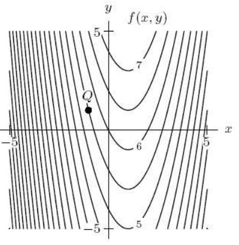

Math 158 Exam 1 Review
- Let \(\displaystyle f(x,y,z) = \tan(x^2 y z)\). Consider the level set \(f(x,y,z) = 1\). What is the tangent plane to this level set at \( (\sqrt(2), \pi/8, 1) \)?
- Consider finding the max/min of the function \(f(x,y,z) = x^2 + y^2 + z^2\) with constraints \(x + y + z = 5\) and \( x + 2y + 3z = 20\) using Lagrange multipliers. Set up the equations you use to find the points to check.
- True or False. \(f = \sqrt{xy}\) solves Euler's equation \(xf_x + yf_y = f\).
- Find the derivative \(D_{\hat{u}} f\) in the direction indicated.
\( \displaystyle z = f(x,y) = e^{-(x^2 + y^2)} \), in direction \(\hat{u} = <\cos 5\pi/4, \sin 5\pi/4 >\), at point (1,1)
- Let \(f(x,y,z) = e^{xz + y}\). Find \(f_{xx}, f_{xy},\) and \(f_{yy}\).
- Find and classify the critical points of \(f(x,y) = (x^2 + y^2)e^{-x}\).
- Sketch a contour map of \(f(x,y) = x^3 - y\).
- Find the unit vector that points from P(2,6,9) to Q(-1,4,11).
- Find the angle between vectors \(\vec{u} = <2,5,6>\) and \(\vec{v} = <-2,-4,-4>\).
- Find the equation of the plane containing the points \( (0,1,1), (2,2,0), (3,0,3) \).
- Consider the contour map of \(f\) below. True or False. \(f_{xx}\) at point Q is positive. Justify your answer.
